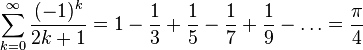

Gottfried Wilhelm Leibniz wurde am 1.Juli 1646 in Leipzig geboren. Es war ein Philosoph und Mathematiker. In der Mathematik leistete er wesentliche Beiträge auf verschiedenen Gebieten.
So entwickelte er z.B. das Binäsystem, nach dem alle Rechenmaschinen und insbesondere die heutigen Computer arbeiten, ebenfalls entdeckte er den Hauptsatz der Differential- und
Integralrechnung, den wir in der Q1 kennen lernen werden.
Was viele nicht wissen, ist, dass Leibniz nicht nur einen starken sächsischen Akzent, sondern ebenfalls einen Sprachfehler hatte: Er lispelte stark. Deswegen verstand man ihn
außerhalb Leipzigs nur schwer. Dadurch litt Leibniz zeitlebens an eiem Minderwertigkeitskomplex.
Als Mathematiker war Leibniz ein Genie. Der andere große Mathematiker seiner Zeit war Sir Isaac Newton, der in Cambridge lehrte.
Beide Forscher entdeckten zeitgleich den o.g. Hauptsatz der Differential- und Integralrechnung und es kam zu einem Streit, wer der Entdecker des
Satzes war und den Ruhm dafür für sich beanspruchen konnte. Newton griff dabei Leibniz mit unfairen Mitteln
an und erreichte, dass man in England Leibniz des Abschreibens bezichtigte. Im übrigen Europa setzte sich Newton nicht durch.
Leibniz war trotzdem davon schwer getroffen. Beide Männer waren tief zerstritten, einer (unbewiesenen) Legende zufolge soll Newton sogar Leibniz´ Tod gefeiert haben.
Leibniz entwickelte sogar den Urahn unseres Computers. Eine von ihm entwickelte Rechenmaschine funktionierte im Prinzip, konnte allerdings zu seinen Lebzeiten nicht gebaut werden.
Es gab nälich Probleme, die feinen Mechaniken, die die Maschine benötigt, ausreichend genau herzustellen. Heute ist das problemlos möglich und ein Nachbau der Maschine
steht in Dresden.
Eine weitere besondere Leistung besteht in der Entdeckung der Leibnizreihe, die es ermöglicht, die Kreiszahl π beliebig genau anzunähern. Diese Leibnizreihe kann man so aufschreiben:

Diese Formel ist mächtig kompliziert und wird auch nur im Leistungskurs Mathematik durchgenommen. Sie basiert auf dem Satz von Taylor, aber das ist ein ganz anderer Mathematiker!
Ich hoffe, ihr habt was Interessantes über den Namenspatron unserer Schule gelernt und dass mit Bildern der Text nicht mehr so langweilig ist :-)
Quellen: Die Bilder für diese HTML-Seite sind von der Wikipedia. Der Text ist von Herrn Langenohl.